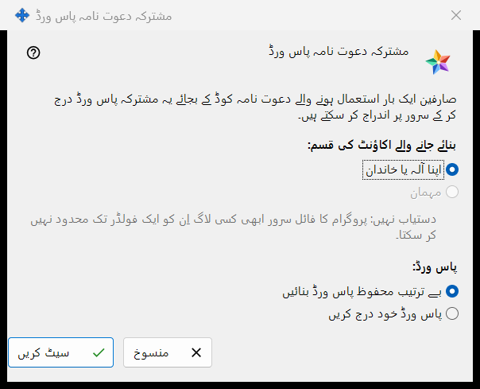
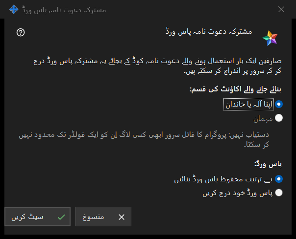

مشترکہ دعوت نامہ پاس ورڈ
یہ کس مقصد کے لیے ہے
یہ ونڈو صارفین کو ایک بار استعمال ہونے والے دعوت نامہ کوڈ کی جگہ ایک مشترکہ پاس ورڈ سے سرور پر اندراج کرنے دیتی ہے۔ اسے ایکسچینج سرور کی ترتیبات کے گروپ دعوت نامے میں مشترکہ دعوت نامہ پاس ورڈ پر نشان لگا کر، یا اس کے ساتھ والے بٹن مشترکہ پاس ورڈ سیٹ کریں.. سے کھولیں۔


اس ترتیب میں
- اکاؤنٹ کی قسم منتخب کریں۔
- طے کریں کہ پاس ورڈ پروگرام بنائے یا آپ خود لکھیں۔
- سیٹ کریں دبائیں۔
- اگر پاس ورڈ بنایا گیا ہو تو اسے اس ونڈو سے کاپی کریں جو اسے ایک بار دکھاتی ہے۔
- اسے قبول کرنا بند کرنے کے لیے مشترکہ دعوت نامہ پاس ورڈ کا نشان ہٹائیں اور تصدیق کریں۔
عناصر
اکاؤنٹ کی قسم
خانہ بنائے جانے والے اکاؤنٹ کی قسم: اپنا آلہ یا خاندان اور مہمان کے انتخاب دیتا ہے۔ مہمان غیر فعال ہے اور اس کے نیچے کی سطر وجہ بتاتی ہے: پروگرام کا فائل سرور کسی لاگ اِن کو ایک فولڈر تک محدود نہیں کر سکتا۔ مشترکہ پاس ورڈ پہلے سے آن ہو تو اس کی موجودہ قسم پہلے سے منتخب ہوتی ہے۔ اگر وہ موجودہ قسم مہمان ہو تو بٹن سیٹ کریں غیر فعال رہتا ہے؛ مشترکہ پاس ورڈ پھر بھی بند کیا جا سکتا ہے۔
پاس ورڈ
خانہ پاس ورڈ: دو انتخاب دیتا ہے: بے ترتیب محفوظ پاس ورڈ بنائیں (پہلے سے منتخب) اور پاس ورڈ خود درج کریں۔ سیٹ کریں دبانے کے بعد ہاتھ سے لکھا ہوا پاس ورڈ ایک پاس ورڈ ونڈو میں مانگا جاتا ہے جو اصول جانچتی ہے: کم از کم 10 حروف، جن میں ایک بڑا لاطینی حرف، ایک چھوٹا لاطینی حرف اور ایک ہندسہ ہو۔ اس ونڈو کو منسوخ کرنے سے آپ یہیں واپس آ جاتے ہیں۔
سیٹ کریں
بٹن سیٹ کریں پاس ورڈ اور اکاؤنٹ کی قسم سرور کو بھیجتا ہے اور مشترکہ پاس ورڈ آن کر دیتا ہے۔ بنایا گیا پاس ورڈ ایک بار الگ ونڈو میں دکھایا جاتا ہے: اسے وہیں کاپی کریں، اسے دوبارہ پڑھا نہیں جا سکتا۔ جو بھی پاس ورڈ جانتا ہو وہ منتخب قسم کے اکاؤنٹ کا اندراج کر سکتا ہے، اس لیے اسے صرف انہی کو دیں جنہیں آپ داخل ہونے دینا چاہتے ہیں۔ کامیابی پر صفحہ دکھاتا ہے: مشترکہ دعوت نامہ پاس ورڈ محفوظ اور فعال کر دیا گیا۔ اور چیک باکس کے نیچے کی حالت والی سطر پر لکھا ہوتا ہے: مشترکہ پاس ورڈ فعال ہے (اکاؤنٹ کی قسم: ..)۔
بند کرنا
نشان ہٹانے پر سوال پوچھا جاتا ہے: کیا مشترکہ دعوت نامہ پاس ورڈ غیر فعال کرنا ہے؟ اس کے ذریعے نیا اندراج ممکن نہیں رہے گا۔ ڈیفالٹ انتخاب نہیں پر رہتا ہے۔ ہاں کے بعد صفحہ دکھاتا ہے: مشترکہ دعوت نامہ پاس ورڈ غیر فعال کر دیا گیا۔ اور حالت کی سطر پر لکھا ہوتا ہے: مشترکہ پاس ورڈ غیر فعال ہے۔
منسوخ
بٹن منسوخ یا Esc ونڈو بند کر دیتے ہیں اور کچھ نہیں بدلتے۔ اگر آپ نے اسے چیک باکس پر نشان لگا کر کھولا تھا تو چیک باکس اپنی پچھلی حالت میں لوٹ آتا ہے۔
مینیجر کی ترتیبات · SFTP اشتراک کی ترتیبات · ایکسچینج سرور کی ترتیبات